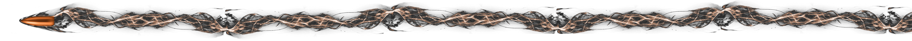

Champ Blanc · 72400 La Ferté-Bernard
VSF Tir Cible vous accueille sur ses 5 stands, de 10 à 100 mètres, que vous soyez licencié, débutant curieux, ou tireur de passage dans la région.
Le club
Vous n'avez jamais tiré au pistolet ou à la carabine et vous voulez découvrir cette discipline ? Notre club sportif est fait pour vous. De passage dans la région avec votre arme ? Rejoignez-nous avec vos documents officiels (voir les tarifs).
Mercredi — 14h à 18h
Dimanche — 9h à 12h
Licenciés, débutants, tireurs de passage munis de leurs documents officiels.
Champ Blanc
72400 La Ferté-Bernard
Nos installations
Initiation, précision courte distance
Pistolet, discipline sportive classique
Carabine, longue distance
2 stands, grande distance carabine
En images
Retrouvez l'ensemble de nos photos — stands, entraînements et compétitions — sur la page Photos.
Voir la galerie